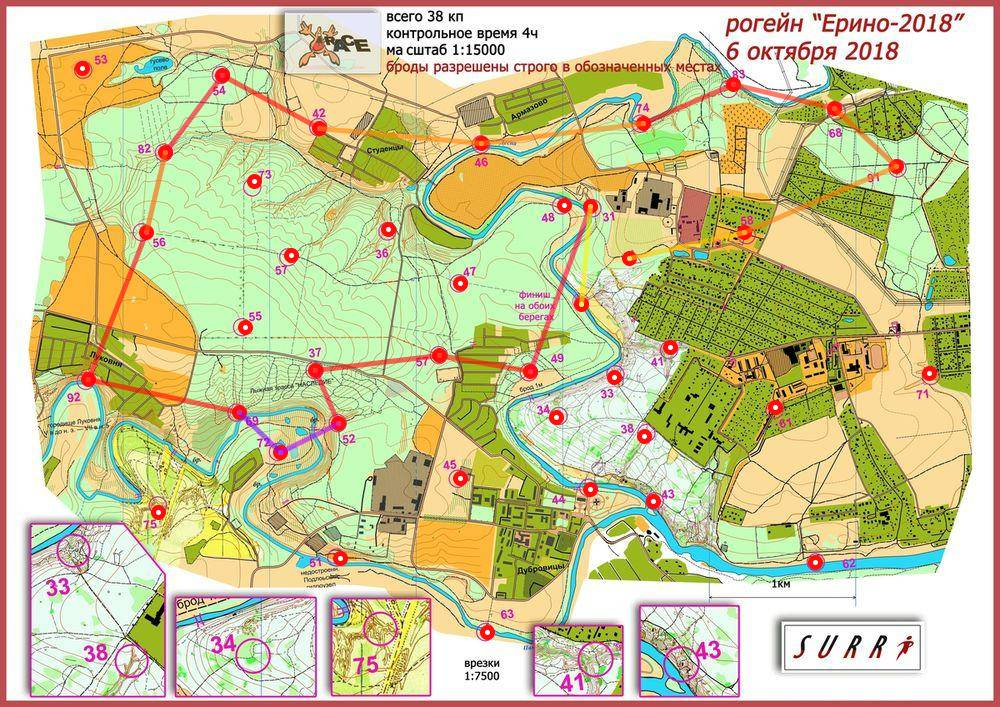

Рогейн Ерино 6.10.18
| Участники | Степанов Павел
|
| Группа | М4Б |
| Место | 17 |
| Очки | 103 |
| Штраф | 0 |
| Время | 03:55:11 |
| Результат | 103 |
| КП | Время | Сплит | Расстояние, км | Темп, мин/км |
|---|
| С | 12:00:00 | | | |
| 58 | 12:07:49 | 00:07:49 | 0.806 | 9.7 |
| 91 | 12:21:25 | 00:13:36 | 1.128 | 12.1 |
| 68 | 12:29:04 | 00:07:39 | 0.572 | 13.4 |
| 83 | 12:39:43 | 00:10:39 | 0.715 | 14.9 |
| 74 | 12:51:32 | 00:11:49 | 0.669 | 17.7 |
| 46 | 13:05:01 | 00:13:29 | 1.111 | 12.1 |
| 42 | 13:18:13 | 00:13:12 | 1.115 | 11.8 |
| 54 | 13:30:16 | 00:12:03 | 0.753 | 16.0 |
| 82 | 13:44:12 | 00:13:56 | 0.652 | 21.4 |
| 56 | 13:51:30 | 00:07:18 | 0.558 | 13.1 |
| 92 | 14:10:26 | 00:18:56 | 1.076 | 17.6 |
| 69 | 14:27:26 | 00:17:00 | 1.056 | 16.1 |
| 72 | 14:39:08 | 00:11:42 | 0.388 | 30.1 |
| 52 | 14:50:10 | 00:11:02 | 0.444 | 24.9 |
| 37 | 14:58:32 | 00:08:22 | 0.397 | 21.1 |
| 59 | 15:12:28 | 00:13:56 | 0.855 | 16.3 |
| 49 | 15:22:08 | 00:09:40 | 0.626 | 15.4 |
| 31 | 15:49:36 | 00:27:28 | 1.198 | 22.9 |
| Ф | 15:55:11 | 00:05:35 | 0.664 | 8.4 |
| | | 03:55:11 | 14.783 км | 15.9 мин/км |
|---|
